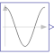
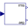

CosineGenerate cosine signal |

|
Information
This information is part of the Modelica Standard Library maintained by the Modelica Association.
The Real output y is a cosine signal:

Parameters (5)
| offset |
Value: 0 Type: Real Description: Offset of output signal y |
|---|---|
| startTime |
Value: 0 Type: Time (s) Description: Output y = offset for time < startTime |
| amplitude |
Value: 1 Type: Real Description: Amplitude of cosine wave |
| f |
Value: Type: Frequency (Hz) Description: Frequency of cosine wave |
| phase |
Value: 0 Type: Angle (rad) Description: Phase of cosine wave |
Connectors (1)
| y |
Type: RealOutput Description: Connector of Real output signal |
|---|
Used in Examples (2)
|
Modelica.Clocked.Examples.Elementary.ClockSignals Simple example of conjunctive and disjunctive logical clocks, combining clock signals to derive new event driven clocks. |
|
|
Modelica.Electrical.PowerConverters.Examples.DCAC.PolyphaseTwoLevel Test of pulse width modulation methods |
Used in Components (1)
|  |
Modelica.Blocks.Math Calculate harmonic over period 1/f |